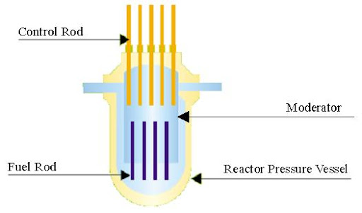
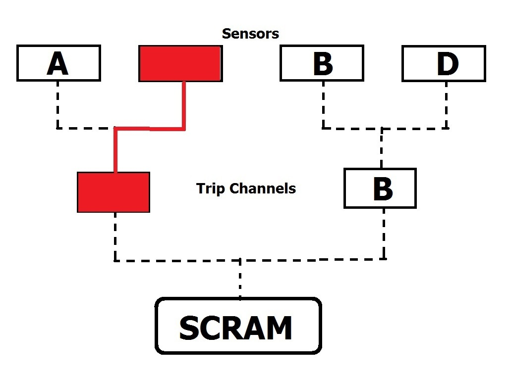
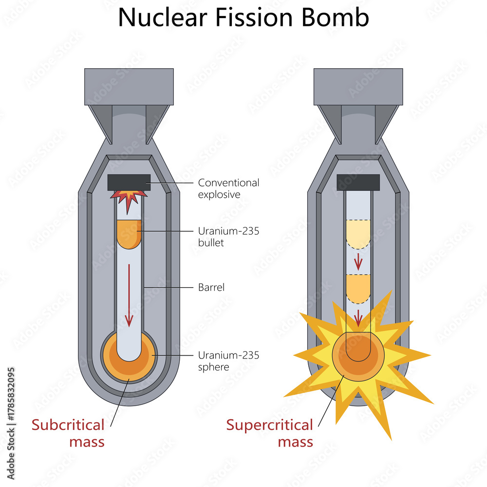
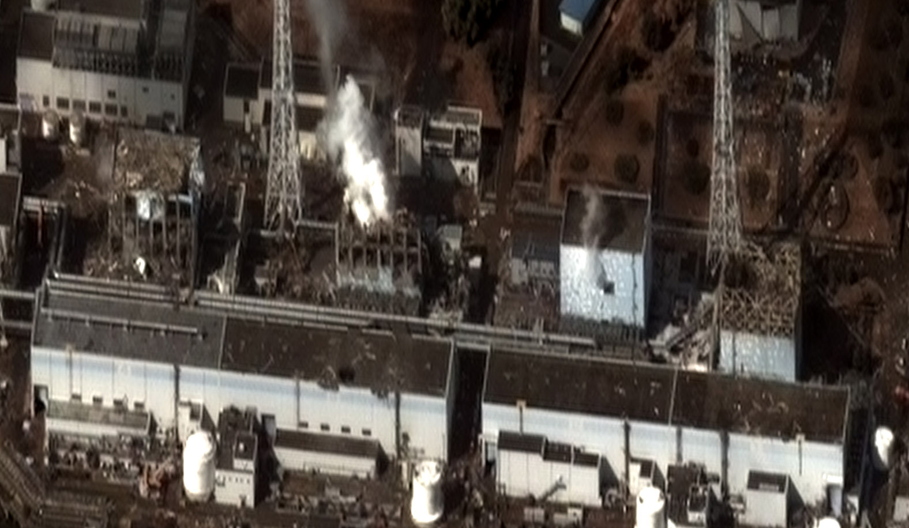

Nuclear energy is one of the cleanest and highest energy producing energy sources. It emits essentially no air pollution during normal operation, while also being able to reliably operate continously at high power. However, many misconceptions surround nuclear energy, leading people to fear this energy source. This website aims to clear up those misconceptions through describing a few of the many redundant measures in place to ensure safety.
Nuclear reactors just involve boiling water somewhere and then uses the steam to turn a turbine generator to produce power. Perhaps knowing it just involves boiling water makes the concept of a nuclear reactor way less intimidating.
Without diving into anything too specific, nuclear reactors essentially just has uranium fuel rods that go through nuclear fission chain reactions to produce heat. Control rods help reduce how much heat they can release by limiting the reactions, and moderators help sustain the nuclear reaction. All of this is contained in a vessel that can handle high pressures. The Pressurized Water Reactors (PWRs), and Boiling Water Reactors (BWRs), are the two most common reactor types. For PWRs the pressure in the vessel is high to the point water cannot boil, so heat is transferred elsewhere to heat a steam generator, or in simple terms, a water boiler. BWRs on the other hand, boil water inside the vessel, and steam is routed directly to the turbine. The image here is a PWR (not to scale).

Nuclear reactors are protected by a set of hardware and/or software relays, which ensures the reactor is always operating withn safe parameters. This is called the Reactor Protection System, or RPS. As abnormal conditions arise, these relays will open, and once enough abnormal conditions are present, all relays open to cut power to the reactor's control rods. As mentioned earlier, control rods slow the reaction, and if power is cut, they are forced into the reactor as quickly as possible. This is called a SCRAM.

Another set of hardware protecting nuclear reactors is the Emergency Core Cooling System, or ECCS. During a Loss Of Coolant Accident (LOCA), the reactor is SCRAMed. However, because of decay heat (heat from radioactive decay even after the ending of the nuclear chain reaction), the water level in the reactor can continue to drop, and eventually drop below the fuel in the reactor, uncovering them. This can cause the fuel to overheat and damage the reactor. ECCS is usually always ready to inject water into the reactor to prevent this.
The negative void coefficient is a design choice in the reactor itself, and is a heavy contributor to safety. A negative void coefficient in the reactor's design means when steam bubbles (voids) are created in the reactor from boiling, the reactor's power output naturally decreases, preventing any runaway reaction.
While these systems are only scratching the surface in the amount of redundancy built into nuclear power plants to ensure their safety, perhaps knowing some of them increases your confidence in nuclear. Nuclear power plants today have learned from past accidents and are regulated to the teeth to ensure no major accident occurs ever again.
Can nuclear reactors explode like nuclear bombs?
In short, no.

Nuclear bombs require a very precise and sophisticated mechanism to trigger a nuclear explosion. Nuclear reactors, being meant to make power and not for maximum destruction potential, do not have the complex sophisticated mechanisms to make the components interact in a way to trigger nuclear explosions.
What happened at Chernobyl?
On April 26, 1986, the Chernobyl disaster occurred, where unit 4 in the Chernobyl Nuclear Power Plant of Soviet Ukraine exploded, and radioactive particles were released all over the region and spread to Europe through winds. This massively lowered public trust of nuclear power, especially in Germany, as anti-nuclear movements have already been active since the 70s.

However, it is important to understand that this is not a reflection of all nuclear power plants' safety. Chernobyl's reactor design was unstable due to cost cutting, workers were pressured into ignoring safety procedures, and the computer warning the operators to shut off the reactor was simply turned off. Nuclear safety regulations were quickly overhauled to how it is today, with many redundant measures to never allow another accident of this scale.
What happened at Fukushima?
On March 11, 2001, the Fukushima Daiichi Nuclear Power Plant in Japan suffered a major nuclear accident, due to the effects of the Tōhoku earthquake and tsunami. The reactors all automatically shut down upon detection of the earthquake and ran ECCS. However, when the tsunami caused by the earthquake hit, all electrical system of the power plant, including nearly every single emergency diesel generator, was destroyed.

After hours, the system that injected water without main power stopped functioning, as the battery operating the valves was depleted. They would resort to injecting seawater directly into the reactor using firetrucks. Later, 3 of the reactors would suffer hydrogen explosions. However,


![Placeholder image]()